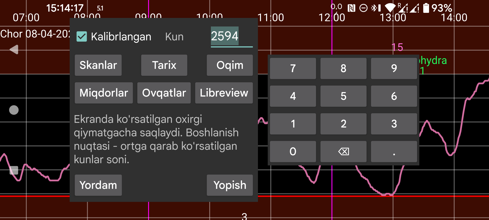

ar be de es nl pl ru tr uk uz zh en
Juggluco ma’lumotlarini faylga eksport qiladi.
Ovqatlar HTML ko‘rinishida saqlanadi. Qolgan barcha ma’lumotlar .tsv (tab bilan ajratilgan qiymatlar) formatida saqlanadi. Bunday fayllarni LibreOffice Calc, Microsoft Excel, Mathematica yoki R kabi dasturlarga yuklash mumkin. Bu vergul o‘rniga tab ishlatiladigan .csv ga o‘xshaydi. UTF‑8 kodlash ishlatiladi.
Ustunlarning ma’nosi bu yerda berilgan: https://www.juggluco.nl/Juggluco/webserver.html.
Kunlar: Juggluco 7.1.0 dan boshlab saqlanadigan kunlar sonini tanlash mumkin. Tugash sanasi ekranning o‘ng chegarasi bo‘ladi. Shuning uchun Juggluco’da eski ma’lumotni ko‘rib turgan bo‘lsangiz, faqat shu eski ma’lumot eksport qilinadi (chap o‘rta menyu→Statistika dagi kabi).
Kalibrlangan: kalibrlangan qiymatlarni saqlaydi. Bu yoqilganda Skan, Oqim va Tarix ham kalibrlangan, ham xom qiymatni saqlaydi. Libreview formatida esa mavjud bo‘lsa faqat kalibrlangan qiymat, bo‘lmasa kalibrlanmagan (xom) qiymat saqlanadi.
Juggluco 7.1.0 dan boshlab shu ma’lumotlarni Juggluco ichidagi veb server orqali ham olish mumkin (Chap menyu→Sozlamalar→Ma’lumot almashish→Veb server), qarang: https://www.juggluco.nl/Juggluco/webserver.html.
Libreview: ma’lumotni Libreview formatida saqlaydi. Bu FreeStyle Libre bo‘lmagan sensorlardan kelgan ma’lumotni shu formatni talab qiladigan dasturlar va veb xizmatlarga import qilish imkonini beradi. Dexcom sensorlari uchun 5 daqiqalik qiymatlar, Sibionics sensorlari uchun esa har 5 daqiqada bitta oqim qiymati saqlanadi. Libre 0, 2 va 3 sensorlarining tarix qiymatlari ham saqlanadi. Bu format insulin dozalari, uglevodlar va izohlarni faqat chap menyu→Sozlamalar→Ma’lumot almashish→Libreview→Miqdorlarni yuborish bo‘limida yorliqlar toifalarga moslashtirilgandan keyingina saqlaydi.